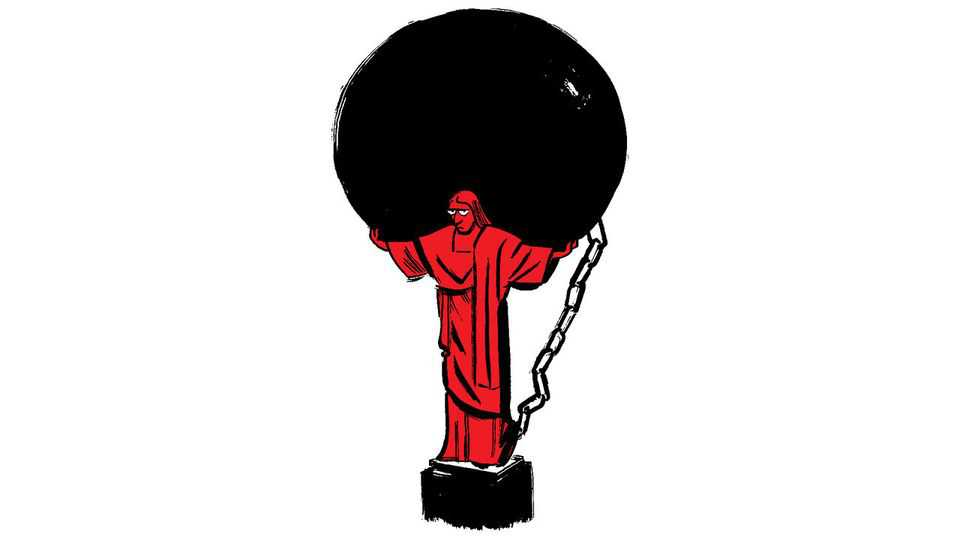

Brazil’s complicated finances
Also this week, AI solving maths equations, money in British politics, Walter Bagehot, trucking to Iran, corporate videos

Oct 1st 2026
Letters are welcome via email to letters@economist.comFind out more about how we process your letter
Dario Durigan’s account of Brazil’s public finances omits the number that matters (By Invitation, September 24th). Gross general government debt stands at 83% of GDP and is forecast to approach 87% next year. A finance minister who describes the official fiscal stance as “almost neutral in terms of its impact on the debt” is conceding that the debt is not falling.
The primary deficit has indeed narrowed. Yet the finance ministry’s own market survey published in September shows the primary balance improving for both 2026 and 2027. Projected gross debt rose to 83.2% and 87.0% of GDP respectively. When the primary result improves and the debt worsens simultaneously, the primary result is not the relevant measure. The consolidation has come chiefly from record revenue, not restraint: primary spending has been held at a high level of around 20% of GDP. And the headline targets are met only once precatórios, health, education and defence outlays are excluded from the calculation.
Mr Durigan cites his government’s ability to negotiate with Congress as proof of its democratic commitment. It is also the mechanism that makes consolidation so hard. The currency of those negotiations is discretionary budget amendments, and your leader identified precisely this rigidity, with 92% of federal spending mandated by law or by the constitution (“Brazil turns its back on the future”, September 26th).
Brazil’s real interest rate, the second-highest in the world, is the price of that arrangement. It is not an external shock. It is the arithmetic of a government that chooses not to tackle it.
Roberto Mário Amaral Lima NetoSão Paulo
The Economist claims that Renan Santos, a libertarian who aims at deep structural reforms, would best “match the moment” in Brazil’s election. However, by diagnosing Lula versus Bolsonaro as a trade-off, this diagnosis overlooks entrenched hardships for the future president, whoever that may be. It is simple to generalise the virtues of the frontrunners as institutional respect from Luiz Inácio Lula da Silva and economic austerity from Flávio Bolsonaro, a lose-lose situation where voters have to choose between the best virtue or the least-worse vice.
Yet even a well-rounded president would hardly be able to translate his potential into sorely needed reforms and economic growth. Congress would still find itself too fragmented, requiring cumbersome deals for the presidency to form a coalition. The mounting reforms that have been debated for the past half century stay static not because of a lack of presidential will, but because of congressional gridlock. This state of affairs is particularly disturbing in a country where most do not remember who they last chose for senator.
Enzo Moro TavaresSão Paulo
OpenAI did not by itself solve the mathematics problem related to the Navier-Stokes equations. Its AI agents drew on the work of generations of human mathematicians (“Axioms to grind”, September 19th). The Fields Medal winners who wrote a letter on the breakthrough are right to warn that “Solving problems is only a tool and proxy for achieving the primary goal of conceptual understanding and insight.”
The danger of AI-driven cognitive offloading is even more acute in schools than it is at the forefront of mathematical sciences. Learning is a process, where friction and challenge are indispensable to progression. The recent PISA results showed that higher-performing students tend not to use AI. If we thoughtlessly allow AI solutionism to expand into education and research the risk of mental decay grows, from early-years education to those working at the vanguard of intellectual discovery.
Offloading a problem to AI misses the purpose of the problem in the first place. Navier-Stokes was one of seven Millennium problems. They were not selected by the Clay institute for utilitarian reasons or because their application will necessarily fix human problems. They were chosen for their deep complexity. Working towards them offered the greatest opportunities for learning and collaboration.
Attempts to solve a problem can be as beautiful as the solution. The most powerful AI tools ultimately need human-generated learning and knowledge. So does humanity.
Peter PhillipsChief executiveCambridge University Press & AssessmentCambridge
One reason that AI has such an influence over us is because it uses the “I”, the universal first person singular (“Artificial transcendence”, August 29th). If AI were to identify itself in its responses using the pronoun “it” instead of “I”, and otherwise stop pretending it has human qualities, the bogus feeling of fellowship which sucks us in would be severely curtailed.
For example, instead of “I am sorry your defective sump pump is causing you such distress. My sources tell me that it needs a new posterior angle-widget,” the AI response would be, “After a review of its sources, ChatGPT suggests installing a new posterior angle-widget in your sump pump.” It is a fix that AI programmers could make in less time than it takes to finish their lattes.
Samuel ReiflerRhinebeck, New York
You may be right that there is “too little money in British politics”, and that Britain’s impoverished parties are “barely able to prepare for power” (“How to spend it”, September 19th). But what counts is how wisely parties spend their revenue. Recent events, for instance, would suggest that Nigel Farage’s decision to hire an obscure yet controversial associate professor of philosophy and theology to professionalise Reform UK’s policy-making process was far from a rational use of resources. The fact that these resources will no longer be scarce if the party is allowed to keep the £72m ($95m) gift it has just received is irrelevant. That remains the case if, like other parties, it continues to appoint policymakers on the basis of ideology and conviviality rather than genuinely relevant expertise and managerial competence.
Tim BaleProfessor of politicsQueen Mary University of London
You lumped Walter Bagehot in with those who believe Britain’s monarchy has a role in day-to-day government (“Aversion therapy”, August 29th). Your former illustrious editor did argue that the monarch was the head of the “dignified” part of government. But his key insight in his 19th-century classic, “The English Constitution”, is that royalty “acts as a DISGUISE. It enables our real rulers to change without heedless people knowing it.” Yes, he did emphasise “disguise” in capital letters. That is Bagehot’s explanation of how our prime ministers can frequently change, as has happened several times recently, while the constancy of the monarch prevents riots from breaking out.
Adrian RobsonLondon
“The new, old Silk Road” (September 12th) reported on the expansion of overland lorry routes following the closure of the Strait of Hormuz. Another crisis 50 years ago also redrew the supply map. In 1976 shipping was still being disrupted by the closure of the Suez Canal. My first job, for Volvo’s commercial-vehicle arm, was to travel by lorry from Glasgow through the Eastern Bloc and Turkey to Tehran, and write a travel manual for customers driving the route. The research was instructive. The border with Iran was closed by Kurdish fighting, cab temperatures could hit 50°C (122°F), I didn’t see running water for ten days until I reached Tabriz, and a flight home was delayed by three days when anti-Shah demonstrators attacked the airport. Iran was then the destination for the lorries to run. Today it is the chokepoint that makes them run again, in the opposite direction.
CHRIS DAVIESOxford
Bartleby wrote about “incredibly dated” corporate-training videos (September 5th). In a shock twist, AI seems remarkably adept at mimicking the dead-eyed stare, wooden acting, and unconvincing line delivery that was previously only possible using fleshy human actors. I don’t expect many protests against this particular use of AI; most of us won’t notice as we reach for the skip-to-next button.
Paul HigginsLondon
I’m still laughing at Bartleby’s column. Every year at my university in Illinois we had mandatory ethics and compliance training that warned us to follow the rules. Most of us had already learned those rules in kindergarten, or Sunday school, or from parents. We randomly clicked on answers for the test and if we did not take enough time to read and answer the questions, we did not get a certificate.
The irony is that this ethics testing was started by Governor Rod Blagojevich, who was later impeached, convicted, and sent to prison for trying to sell the Senate seat vacated by Barack Obama upon his election to the presidency.
Jelmir AtkinsSycamore, Illinois